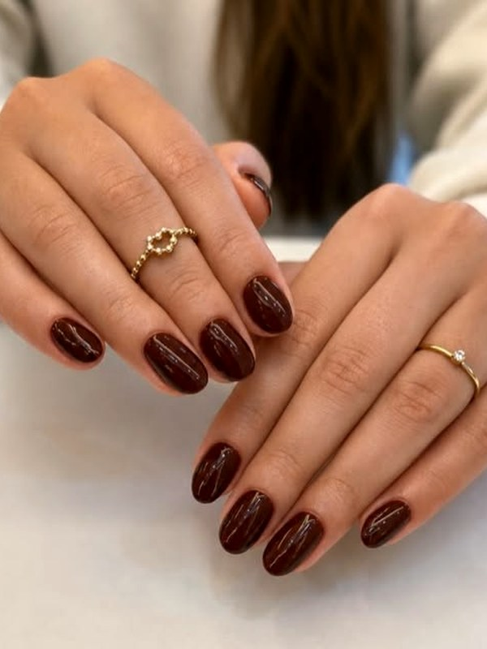
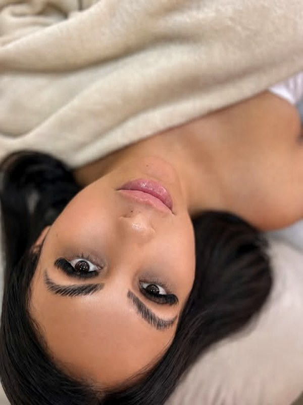
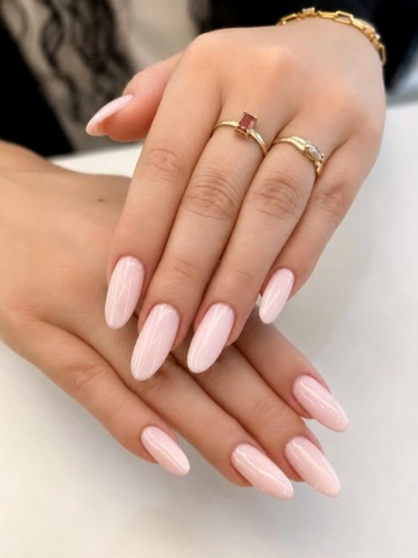
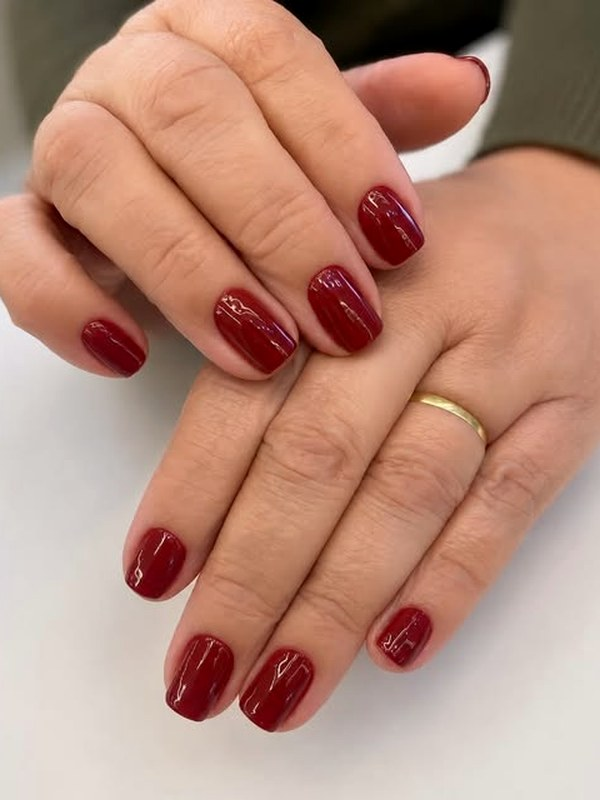
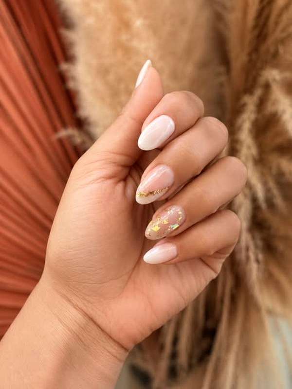
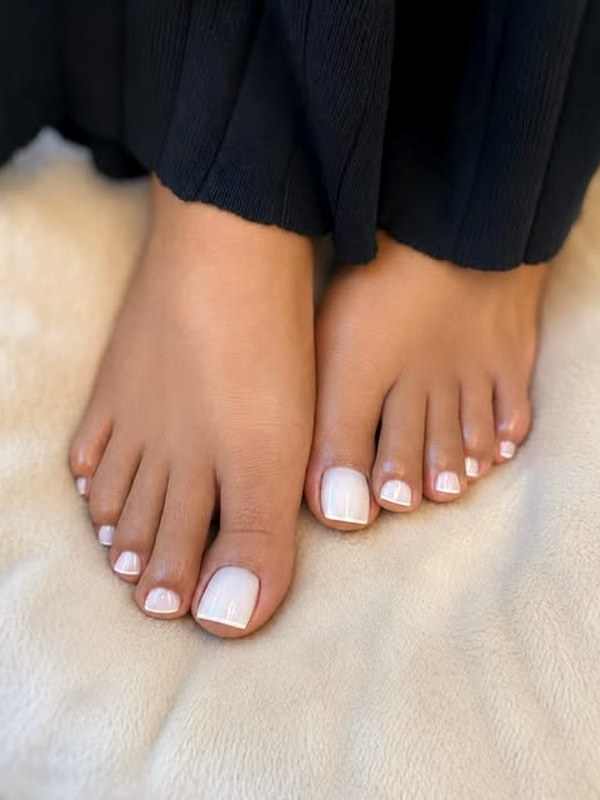
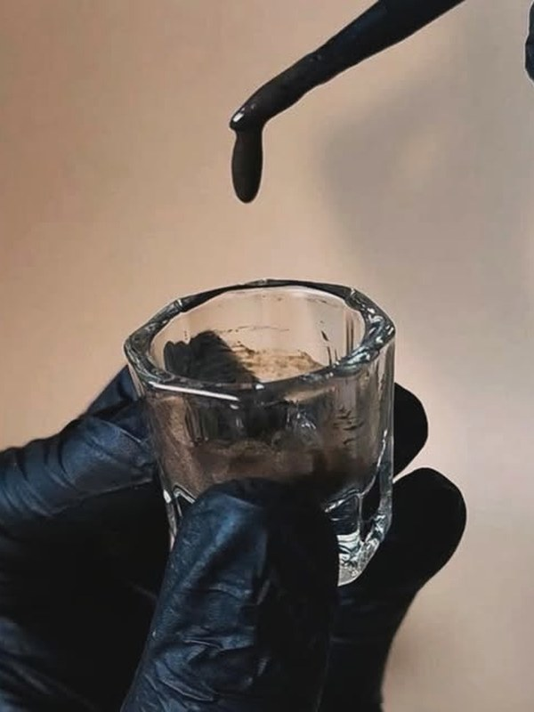

Cílios
Fox Eyes, Egípcio 5D, Volume Brasileiro, fios marrom e lash lifting. Cada olho recebe o desenho que combina com ele.
Extensão de cílios, unhas e sobrancelhas em Balneário Camboriú. Duas profissionais, atendimento individual e hora marcada.
Fox Eyes, Egípcio 5D, Volume Brasileiro, fios marrom e lash lifting. Cada olho recebe o desenho que combina com ele.
Alongamento, esmaltação em gel e nail art — do nude discreto ao vinho fechado, com acabamento que dura.
Design que respeita o formato do seu rosto — moldura de olhar, não linha copiada de foto.
Escolha uma técnica e veja os fios sendo aplicados, um a um.
O canto de fora ganha comprimento e o olhar sobe. É o efeito puxado, de gatinho — alonga principalmente quem tem o olho mais redondo.
Quero esse olharO desenho acima é ilustrativo. O resultado muda conforme o formato do seu olho e a saúde do seu fio natural — quem define a técnica que cabe em você é a avaliação no dia.
Role para o lado — tudo aqui saiu das nossas mãos.







O Spaço Beauty é tocado por duas profissionais — e o NK do nome vem delas.
Nail Designer
@kellincernek_ ↗Manda uma mensagem no Direct contando o que você quer fazer. A gente responde com os horários que tem.
Atendimento com hora marcada em Balneário Camboriú - SC. O endereço a gente passa na confirmação.